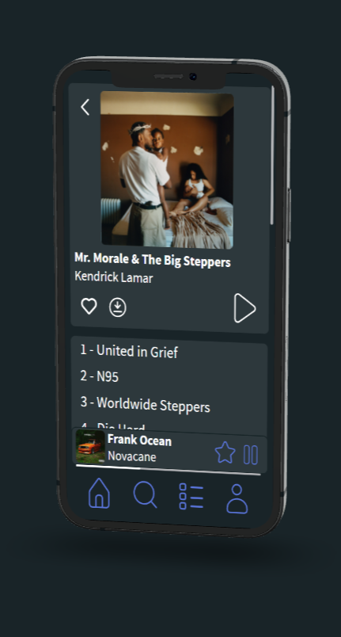
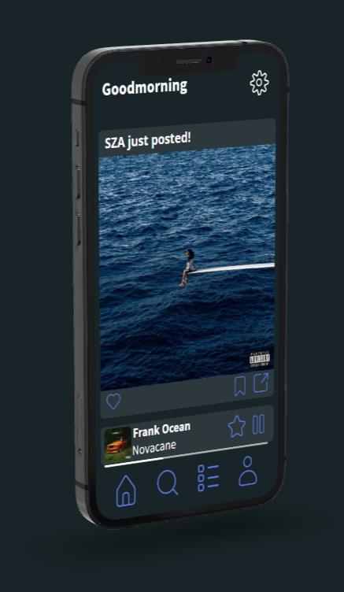

About Us
We're MusiConnect, a new social media and streaming client. You can connect your Spotify or Apple Music account to use the app like the official clients, but there are extra features allowing you to share music and stay up-to-date on your favourite artist's newest releases. To stay up-to-date on beta-access, follow @joinmusiconnect on all socials or join our newsletter below.